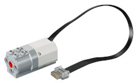

Lego Motoren sind schon ein ganz besonderes Kapitel. Die Vielfalt ist nahezu unüberschaubar. Es gibt eine ganz hervorragende Seite, die Übersicht verschafft!
Lego Motoren. Der Autor (danke Philo!) listet die Motoren übersichtlich mit zahlreichen technische Details.
... und hier gibt es sogar eine deutsche Übersetztung dazu:
Lego Motoren (auf deutsch)
Ich verwende im Moment(für Leuchtturm, Achterbahn und Karussell) den "einfachen mittleren Linearmotor" (45303) mit dem LPF2 Anschluss.

Die meisten Motoren - dieser auch - benötigen eine Spannung von 9 V.
Hier kommt dann Text über die Anschlüsse rein